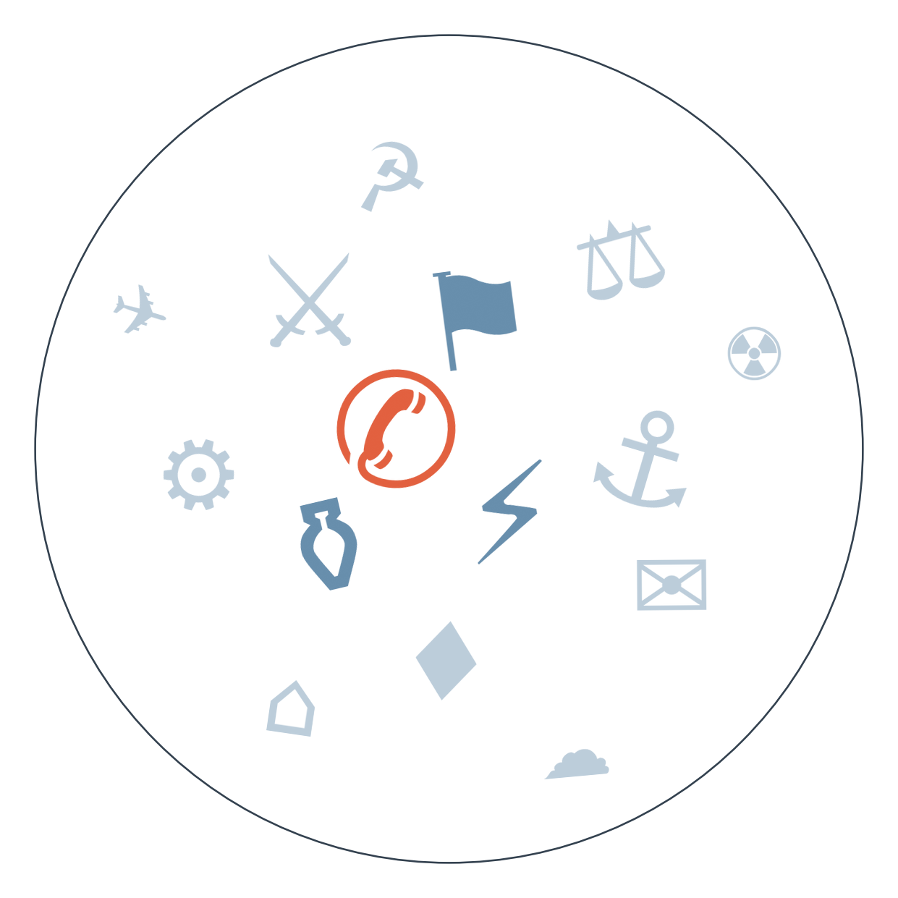

Ранковий бріф · огляд світової преси
Виявляється, найруйнівніший цієї ночі удар по Києву прийшовся не по електростанції, а по будівлі Національної академії наук: за словами Зеленського, загинули дев'ятеро, постраждали понад 80 людей, а через удари по дата-центрах у столиці тимчасово перестала працювати оплата проїзду. По суті це ставить крапку в питанні, чи діяло ще якесь неформальне енергоперемир'я — наш прогноз про його зрив збувся достроково, і тепер питання в тому, чи витримає інфраструктура зиму (триває: пошук формату завершення війни в Україні).
А тим часом у Вашингтоні саміт Сі і Трампа завершився підписанням угоди про канал зв'язку щодо ризиків штучного інтелекту — начебто прорив, але аналітики Foreign Policy й OilPrice одностайні: сторони просто виграли час, по суті нічого не вирішивши. Пекін тим часом оприлюднив деталі плану "300 на 300" для реалізації торговельного перемир'я, тож перша перевірка на практичність настане вже 1 жовтня (триває: торгова війна США-Китай).
Трамп зібрав керівників найбільших техкомпаній на обід у Білому домі й вийшов звідти з "морально обов'язковою" — але юридично нічого не значущою — угодою про саморегуляцію штучного інтелекту, а заразом підписав указ, що офіційно перейменовує ШІ на "суперінтелект". Це радше символічний жест, ніж регуляторний прорив: перевірок дотримання не передбачено, зате бізнес уже сприйняв це як зелене світло для подальших інвестицій у дата-центри.
Верховний суд США дозволив адміністрації Трампа відновити депортацію мігрантів у треті країни, попри те що суддя в Бостоні раніше визнав цю практику незаконною. Рішення 6-3 голосами консервативної більшості означає, що з понад 25 тисяч уже депортованих у 29 країн людей список продовжить рости, поки суд не розгляне справу по суті.
У Франції протести школярів і студентів переросли зі 164 затримань кілька днів тому у понад 400 сьогодні, а прем'єр вже відкрито попереджає про ескалацію. Це насуває урядову кризу на додачу до вже наявної: Національне об'єднання щойно вперше здобуло фракцію в Сенаті, і вуличний тиск лише посилює позиції опозиції (триває: політична криза у Франції).

Саміт Сі-Трампа: прорив чи театр
🌐 Trivium China (спостерігачі за китайськими платформами): технічна рамка — фіксують сам факт створення каналу зв'язку щодо ризиків ШІ як конкретний, хоч і вузький, результат саміту.
Замовчують: жодна зі сторін не пояснює, чому суперечка щодо можливого продажу зброї Китаю (посол США підтвердив, Трамп заперечив) виникла саме зараз і що це означає для реального стану перемир'я.
Чому розходяться: Foreign Policy пише для аудиторії, зацікавленої в оцінці зовнішньополітичної стратегії Вашингтона, тож шукає провали. OilPrice обслуговує енергетичний та інвесторський інтерес — їм важливо, чи знімуться тарифні й енергетичні бар'єри, а не символіка. Trivium працює з обмеженим, перевіреним фактажем із китайських джерел і уникає оцінних суджень. The Diplomat орієнтований на регіональну аудиторію Азії, тому в центрі уваги — Тайвань і те, наскільки Пекін відчув себе переможцем.
Угода про саморегуляцію ШІ: жест чи політика
Замовчують: жодне з видань не порушує питання, хто саме перевірятиме дотримання цих добровільних стандартів і що станеться з компанією, яка їх порушить.
Чому розходяться: BBC орієнтується на видовищність мовного жесту, який легко пояснити широкій аудиторії. Guardian системно критикує адміністрацію Трампа за відмову від жорсткого регулювання. FT обслуговує інтереси інвесторів, для яких важливий сам факт консенсусу індустрії. National Post документує без оцінки, бо для канадської аудиторії тема периферійна.
Торгова війна → крихке перемир'я
Літо 2026: тарифна ескалація США-Китай → вересень: перемир'я на паперовій стадії з дедлайном 1 жовтня → 29-30 вересня: саміт у Вашингтоні, оприлюднення плану "300 на 300" і суперечка щодо можливого продажу зброї (посол підтвердив, Трамп заперечив) → до чого веде: перевірка, чи Пекін реально імплементує план до 1 жовтня, чи суперечка щодо зброї підірве й так крихку домовленість.
9 вересня: обмін ударами США-Іран (прогноз від 2 вересня справдився достроково) → 30 вересня: Axios повідомляє про тупик переговорів через Катар, IRGC називає підхід Трампа провалом → до чого веде: зростання ризику нового удару, особливо якщо справдиться очікування Трампа відновити бомбардування після проміжних виборів 3 листопада.
Вересень: Національне об'єднання вперше здобуває фракцію в Сенаті → прем'єр попереджає про ескалацію студентських протестів, кількість затриманих зросла зі 164 до понад 400, масові закриття шкіл → до чого веде: політична нестабільність уряду напередодні можливого голосування довіри.
ОПЕК+, за даними Bloomberg, залишить видобуток нафти без змін на найближчому засіданні, попри напругу довкола Ормузької протоки.
Промисловий PMI Китаю, за даними NBS/Caixin, зріс до 50.1 у вересні, повернувшись у зону розширення вперше за два місяці після літніх погодних збоїв.
Резервний банк Австралії, за даними Reuters, вчетверте цього року підняв ставку — до 4,60% — через прискорення інфляції та погіршення рахунку поточних операцій.
Дохідність довгострокових американських держоблігацій наближається до 5%; за оцінкою Branch Global, це може стати "новою нормою" і підняти вартість запозичень у світовому масштабі.
Поки якісна преса розбирає підсумки саміту Сі-Трампа й указ про "суперінтелект", Bild хвилюється через відсутність снігу на Маттерхорні й пропонує гороскоп на тиждень. Fakt у Польщі того ж дня, коли суд ЄС відмовив Варшаві щодо Mercosur, виносить на першу шпальту дитячі трагедії й побутові драми. Times Now в Індії ставить новину про виборчі форми поряд із гороскопом Боллівуду — межа між серйозним і несерйозним там майже стерта.
Нічна атака по будівлі Академії наук (див. ГОЛОВНЕ) — пряма загроза цивільній інфраструктурі напередодні зими.
Енергетичне перемир'я де-факто зірване: Зеленський попереджає, що дефіцит бюджету може призвести до нестачі дронів, тоді як західні виробники зброї скаржаться на надто жорсткі експортні ліцензії — тиск одночасно зсередини і ззовні на здатність відбивати атаки.
Молдова заявляє про проблему зі скидом води по Дністру (див. ПУЛЬС КРАЇН) — тертя із сусідом на тлі спільної залежності від річки, ризик для образу України як надійного партнера в регіоні.
Війна в Ефіопії (Тигray, Еритрея, Судан) тиждень тому висвітлювали лише три видання — сьогодні тема зникла навіть із них повністю. Мовчать усі: гучніші сюжети витіснили конфлікт, у якому й так не було потужного інформаційного лобі.
Свідчення ізраїльських військових про "фабрику цілей" і "супутню шкоду" в Газі, опубліковані Le Monde спільно з Breaking The Silence, жодне інше велике видання цього дня не підхопило. Мовчать переважно англомовні та ізраїльські ЗМІ: тема ризикована юридично і незручна для редакцій, залежних від відносин з армією.
Суд у Танзанії готується оголосити вирок у справі про державну зраду проти опозиційного лідера Тунду Ліссу — можлива смертна кара для головного політичного суперника влади. Висвітлює лише The Africa Report; західні редакції тему просто не підхопили, бо Танзанія не входить у зону їхньої постійної уваги.
Середня впевненість. Тупикові переговори США-Іран через Катар можуть означати відновлення бойових дій до кінця року. На чому ґрунтується: єдине джерело — Axios, яке переказують Kommersant і Mint; підтверджень з інших незалежних каналів немає.
Низька впевненість. Суперечка щодо можливого продажу американської зброї Китаю (посол підтвердив, Трамп заперечив) може сигналізувати про розкол усередині переговорної команди США. На чому ґрунтується: тема фігурувала раніше в межах цього сюжету, а в сьогоднішньому дайджесті прямих підтверджень немає.
Висока впевненість. Ескалація протестів у Франції (понад 400 затримань, закриття шкіл) наближає країну до урядової кризи. На чому ґрунтується: незалежно підтверджують Der Spiegel, ORF, Denik N і Kazinform (переказ) — чотири джерела одного дня.
Рахунок: 10 з 25 (базово 9 з 25) — сьогодні +1 (енергоперемир'я порушено масованою атакою на Київ), закрито ще два прогнози без справдження (санкції проти хуситів, розблокування Францією санкційного списку ЄС).
Наші:
Закрито (СПРАВДИЛОСЬ достроково) — енергетичне перемир'я буде порушено: підтверджено масованою нічною атакою на Київ.
Закрито (НЕ СПРАВДИЛОСЬ) — санкції проти хуситів.
Закрито (НЕ СПРАВДИЛОСЬ) — Франція розблокує санкційний список ЄС.
Кажуть інші:
Axios (редакція) — очікує зростання ймовірності відновлення бойових дій між США та Іраном після зриву переговорів через Катар. Горизонт не вказано.
Bloomberg (за Kazinform) — прогнозує, що ОПЕК+ залишить видобуток нафти без змін на найближчому засіданні. Горизонт — найближче засідання картелю.
Трамп (за оцінками аналітиків) — очікується відновлення авіаударів по Ірану після проміжних виборів 3 листопада. Горизонт — після 3 листопада.
Орієнтовно 6 жовтня — горизонт запровадження нормування води в Кишиневі через обміління Дністра.
10 січня 2027 — альтернативний дедлайн торговельного перемир'я США-Китай, якщо не спрацює 1 жовтня.
Базова лінія у прогнозах. Відсоток «базово» — це ймовірність події за інерцією, якщо ніхто нічого не робитиме й нічого не зміниться. Друге число — наша впевненість. Прогноз має сенс лише тоді, коли ці числа розходяться: збіг означає, що ми просто описали поточний стан.
Відсотки в карті уваги. Частка країни в денному обсязі зібраних матеріалів. Не показник важливості події, а показник того, скільки місця країна зайняла в новинному потоці за добу. Різкий стрибок частки зазвичай означає, що в країні щось відбувається.
Стрічки, які не відповіли. Не відповіли: De Standaard, Telex, The Japan Times, Taipei Times, Al Arabiya, Il Foglio, El Universal, Milenio.